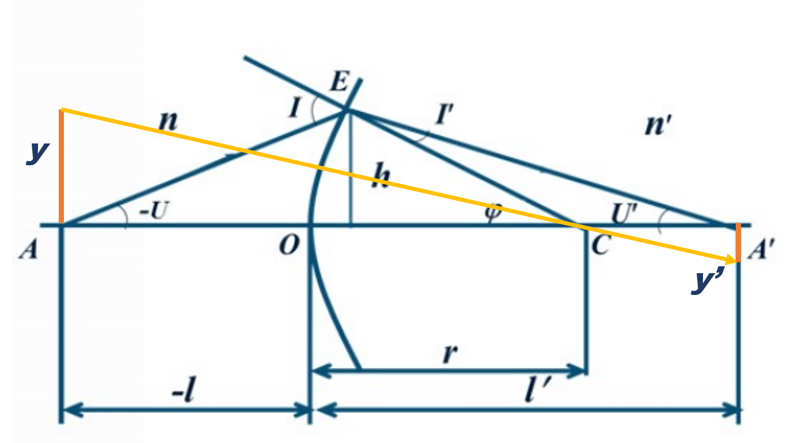

光线追迹

实际光线
$$
\begin{cases}
\sin I = \frac{L-r}{r}\sin U\\
\sin I' = \frac{n}{n'}\sin I\\
U' = U + I - I'\\
L' = (1 + \frac{\sin I'}{\sin U'})r
\end{cases}
$$
$$
\frac{\sin(\pi - I)}{-L + r} = \frac{\sin(-U)}{r} \Rightarrow
\sin I = \frac{L-r}{r}\sin U
$$
$$
n\sin I = n'\sin I' \Rightarrow
\sin I' = \frac{n}{n'}\sin I
$$
$$
\begin{cases}
I = -U + \phi\\
\phi = I' + U'
\end{cases}\Rightarrow
U' = U + I - I'
$$
$$
\frac{\sin I'}{L' - r} = \frac{\sin U'}{r} \Rightarrow
L' = (1 + \frac{\sin I'}{\sin U'})r
$$
近轴光线
$$
\begin{cases}
i = \frac{L-r}{r}u\\
i' = \frac{n}{n'}i\\
u' = u + i - i'\\
l' = (1 + \frac{i'}{u'})r
\end{cases}
$$